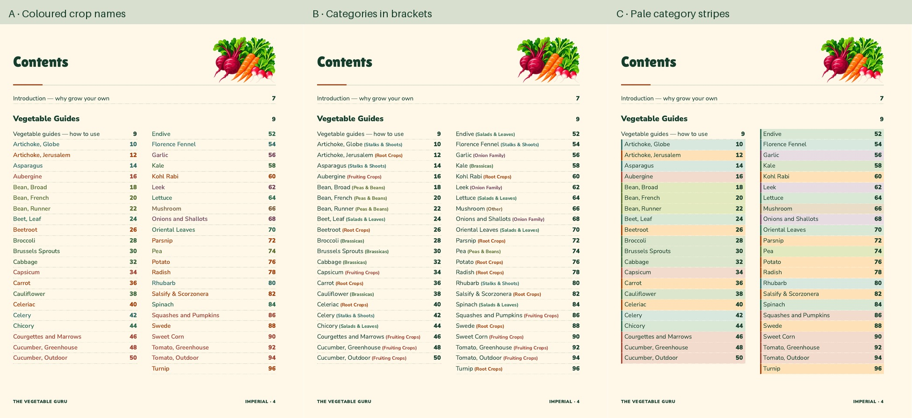

Three ways to add category colour
John selected A on 30 October. B and C are retained as unselected alternatives. All retain the current titles, references, illustrations and 10.5 pt crop names. The facing Troubles/Techniques page is unchanged. A awaits integration. The approved lower key with a paler background awaits integration.
Open the six-page PDF · A: pages 1–2 · B: 3–4 · C: 5–6
Compare all three vegetable lists
